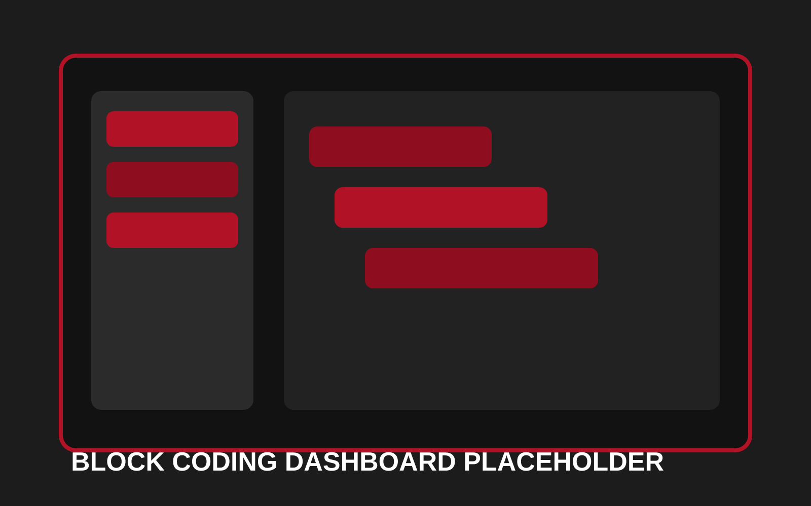
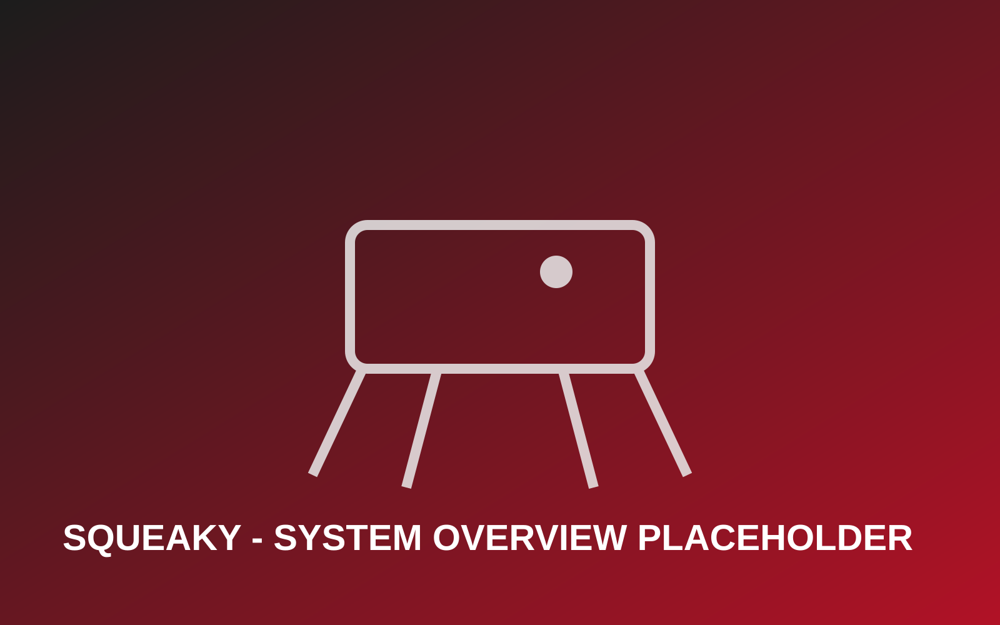

Project Overview: Squeaky
Squeaky is a low-cost quadruped robot dog developed as a Master's Project to address a critical gap in K-12 STEM education: the lack of affordable, durable, and accessible robotic platforms. Commercially available robot dogs typically cost $600-$2000, making them inaccessible to most schools and families. Squeaky was engineered to meet four key requirements:
- Affordability: Total material cost under $100
- Durability: Withstand drops, impacts, and rough handling from students
- Ease of Assembly & Repair: Modular design with simple, standardized components
- Intuitive Interface: Block-based drag-and-drop coding without syntax barriers
This project demonstrates comprehensive systems engineering: from mechanical design and FEA analysis, to embedded control algorithms and real-time wireless communication.
Project Gallery
Current gallery includes visual placeholders mapped to real project moments; replace each with your actual build photos while keeping the captions and structure.



Mechanical Design
The robot features an 8-degree-of-freedom configuration with two MG996R high-torque servo motors per leg (4 legs × 2 servos = 8 DOF), enabling precise control of hip and knee joints.
Leg Architecture
Embedded servo leg design chosen over linkage-based legs to reduce assembly complexity and simplify inverse kinematics calculations
Materials & Fabrication
3D-printed PLA structure designed in Onshape CAD with intentional layer-line orientation for maximum strength. Aluminum alloy servo attachments at joints ensure robust connections.
Modularity
Uses only two screw types with fully modular components for easy assembly, repair, and customization
Design Software
Onshape (cloud-based CAD) for parametric design enabling rapid iteration and client feedback incorporation
Electrical Architecture
The electrical system prioritizes real-time responsiveness, low cost, and simple integration using standard off-the-shelf components.
Microcontroller
Arduino Uno R4 Wi-Fi with built-in ESP32-S3 wireless module for wireless control without additional shields
Servo Control
V5 Sensor Shield breakout board for simplified servo connection without complex wiring. 8× MG996R servos with internal potentiometer feedback
Motor Selection
Servos chosen over DC/stepper motors for built-in position feedback, lower power consumption, and simpler control
Power Management
Tethered power supply (to PC or wall outlet) enables easy debugging and eliminates charging time requirements
Control Logic & Inverse Kinematics
The control system uses precise inverse kinematic equations to translate desired foot positions into servo angle commands.
Calibration Process:
- Each servo calibrated to 90° neutral position
- Limbs adjusted to perpendicular configuration
- Calibration offset saved and applied to all subsequent angle calculations
Kinematics Model:
- Each leg modeled as a two-link planar system
- Known leg dimensions (H = 72.62 mm, K = 76.21 mm) used in inverse kinematics
- Law of Cosines applied to compute joint angles from desired X-Y foot positions
- C++ implementation on Arduino ensures low computational overhead
Result: Smooth leg motion with real-time responsiveness suitable for microcontroller execution.
Durability & Structural Validation
Finite Element Analysis (FEA) in SimScale validated structural integrity under extreme conditions. Multiple loading scenarios simulated with forces up to 100N (~22 lbs).
| Test Scenario | Force Applied | Factor of Safety |
|---|---|---|
| Upper Leg - Distributed Load (compression) | 50N / 100N | 11.9 / 5.96 |
| Upper Leg - Point Load (impact) | 50N / 100N | 29.7 / 14.9 |
| Lower Leg - Distributed Load (pickup scenario) | 50N / 100N | 3.56 / 1.78 |
| Lower Leg - Point Contact (drop scenario) | 50N / 100N | 29.7 / 14.9 |
Minimum factor of safety: 1.78 under extreme conditions (100N applied force). Since this exceeds normal operational stress, structural integrity is validated for everyday classroom use. Results based on PLA yield strength of 40 MPa.
User Interface & Block-Based Programming
To make the robot accessible to younger students, a custom drag-and-drop interface was developed using lightweight web-based architecture.
Technical Implementation:
- ESP32-S3 module hosts a lightweight HTTP server with HTML-based control dashboard
- Dashboard stored directly in flash memory for zero external dependencies
- Users connect via Wi-Fi to access Scratch-style interface
- No text-based code required—purely visual block composition
Available Commands:
- Motion: Stand, Sit, Walk Forward, Walk Backward, Turn Left, Turn Right, Lean Left, Lean Right, Height Control
- Logic: Repeat loops, Wait functions, Conditional operators
Learning Benefits:
- Prioritizes conceptual understanding of coding and algorithmic thinking
- Eliminates syntax error frustration
- Enables rapid prototyping with immediate visual feedback
- Gamifies learning experience through interactive robot control
Cost Analysis & Market Positioning
Aggressive cost optimization was central to the design, with material costs tracking at ~$103 using retail channels (Amazon, etc.), comfortably near the $100 target.
| Component | Qty | Cost | % of Total |
|---|---|---|---|
| MG996R Servos (8×) | 8 | $32.84 | 32% |
| Arduino Uno R4 Wi-Fi | 1 | $29.15 | 28% |
| Aluminum Servo Attachments (8×) | 8 | $14.82 | 14% |
| 3D Print Material (PLA, 276g) | - | $8.28 | 8% |
| V5 Sensor Shield | 1 | $2.83 | 3% |
| Power Supply & M3 Screws | - | $15.83 | 15% |
| TOTAL | - | $103.75 | 100% |
Bulk Production: Costs reduce further through wholesale suppliers (AliExpress/Alibaba), bringing sub-$100 target closer to reality.
Retail Price Estimate: Using industry-standard 2.5× markup for manufacturing, assembly, and packaging yields ~$260 — still 20% cheaper than Petoi Bittle ($329) and 56% cheaper than Mangdang Minipupper ($604). This positions Squeaky as one of the most affordable robotic platforms available for K-12 education.
Technology Stack
Key Features
- Real-Time Control: Low-latency communication between web interface and embedded controller
- Inverse Kinematics: Automatic conversion of desired foot positions into joint angle commands
- Gait Sequencing: Pre-programmed locomotion patterns for stable, coordinated movement
- Visual Programming: Scratch-style blocks enable intuitive behavior design without traditional syntax
- Live Telemetry: Real-time sensor feedback displayed directly in the web interface
- Extensible Architecture: Modular design allows for custom gaits and control strategies
Results & Impact
This project demonstrates integration of mechanical design, control theory, and software engineering into a cohesive system. The browser-based interface lowers barriers to entry for robotics, making advanced concepts like inverse kinematics accessible to students with minimal programming background.
The platform has been refined through iterative testing and user feedback, establishing it as an effective tool for robotics education and research prototyping.
Interested in This Project?
I'm always open to discussing robotics, control systems, or technical collaborations. Let's talk!
Get In TouchSource Document
Technical details on this page are based on the full Master's Project paper.
Open Master's Project Paper